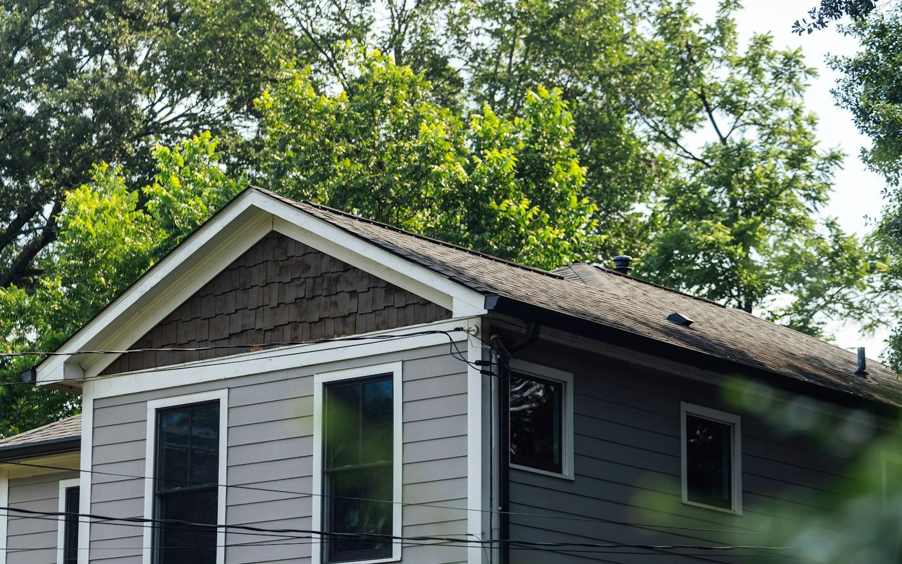

Siding installation
Siding Contractors in Cornwall, Ontario
Vinyl, engineered wood and board-and-batten — with the house wrap, flashing and ventilation details that decide whether the wall behind it stays dry.
Siding is the most visible thing you can do to a house and the easiest to do badly, because almost all of the work that matters is hidden the moment the last panel goes on. What keeps a wall dry is not the siding — it is the weather barrier behind it, the flashing above every window and door, and the drainage path water takes when it inevitably gets past the surface.
A lot of the housing stock around here is now well past the service life of its original cladding. Long Sault and Ingleside were built in 1957 and 1958 to rehouse families displaced by the St. Lawrence Seaway, and much of Cornwall's east end is the same vintage. On houses that age we routinely open the wall and find no weather barrier at all, or flashing that was never installed over the window heads. Re-siding is the one chance you get to fix that.

Scope of work
What a re-side involves
Tear-off and inspection
Old cladding comes off and we look at what is underneath before anything goes back on. Rotten sheathing, damaged studs and previous water damage get photographed and shown to you, not quietly covered up.
Sheathing repairs
Any compromised sheathing is replaced. We price this as a per-sheet allowance up front so there is no uncomfortable conversation halfway through the job.
Weather barrier
House wrap installed properly — correct overlaps, taped seams, and integrated with the window flashing so water running down the wall is shed outward rather than behind it.
Flashing and trim
Head flashing over windows and doors, proper J-channel and corner detail, and kick-out flashing where a roof meets a wall. That last one is small, cheap, and the source of an enormous share of hidden wall rot.
Siding installation
Fastened to the manufacturer's spec — vinyl hung, not nailed tight, so it can expand and contract through a 60-degree annual temperature swing without buckling.
Soffit, fascia and eavestrough
Vented soffit sized for the attic it serves, fascia that carries the trough properly, and eavestrough with the fall and downspout placement to move water away from your foundation.
Options
Cladding options
What each one is genuinely good at.
Vinyl siding
The most common choice in Cornwall for good reason: the lowest installed cost, no painting, and a large colour range. Modern insulated vinyl also adds a little R-value and lies noticeably flatter than the standard product.
- Lowest installed cost
- No painting
- Insulated options available
Engineered wood
Looks like painted wood with far more dimensional stability and impact resistance than vinyl. It is the right call on a house where vinyl would look wrong, and it handles a stray hockey puck considerably better.
- Authentic wood appearance
- Strong impact resistance
- Pre-finished options
Board-and-batten
Vertical boards with battens over the seams. It suits farmhouse and modern-rustic elevations and works particularly well as an accent on gables and entry walls rather than over an entire house.
- Strong architectural character
- Excellent as an accent
- Vinyl or engineered wood
Why kick-out flashing matters more than the siding you pick
Where a roof edge runs into a wall, water needs somewhere to go. Without a small piece of kick-out flashing directing it into the eavestrough, it runs straight down behind the cladding and into the wall cavity — every rainfall, for years, with nothing visible from outside.
By the time it shows up inside as a stain, the sheathing and framing behind it are usually gone. It is a small detail and it costs almost nothing to do at install time. We do it as standard, and we check for it on every re-side we open up.
Service areas
Siding across Cornwall & SD&G
Based in Cornwall and working across Stormont, Dundas and Glengarry. If your town is not listed, call us anyway — we travel.
FAQ
Siding: common questions
How long does vinyl siding last in Eastern Ontario?
Typically 25 to 40 years, though our climate is harder on it than most: ultraviolet in summer, and cold that makes vinyl brittle enough to crack on impact in deep winter. Installation quality matters as much as product quality. Vinyl that is nailed tight instead of hung with room to move will buckle in the first hot spell, and no warranty covers that.
Can you side over the existing siding?
Sometimes it is physically possible, but we usually advise against it. Going over the top means you never see the sheathing, never confirm there is a weather barrier, and never correct missing window flashing — which are the three things that actually determine whether the wall stays dry. It also builds the wall out past the existing window and door trim, which rarely looks right.
Do you do soffit, fascia and eavestrough as well?
Yes, and it is worth doing at the same time. The soffit, fascia and trough all tie into the top course of siding, so doing them together gives one clean detail and one crew responsible for it. Splitting the work across two contractors is where the finger-pointing starts if water gets in at that junction.
What if you find rot once the old siding is off?
We photograph it, show you, and price the repair against the allowance we set in the original quote. We would rather build a realistic sheathing allowance into the number up front than come back to you mid-job with a surprise. On a house of 1950s vintage some sheathing repair is likely, not exceptional.
Will new siding make my house warmer?
On its own, only slightly. What makes the difference is what goes on with it: continuous exterior insulation, a properly sealed weather barrier, and closing the air leaks that a tear-off exposes. If lower heating bills are the goal, say so at the quote stage and we will price the wall assembly rather than just the cladding.
Free quote
Get a free quote for your siding project
Tell us what you are planning. We reply to every inquiry, usually within one business day.
Services
Other things we do
Deck building
Custom pressure-treated, cedar and composite decks engineered for Eastern Ontario frost.
Read more 02Fence installation
Privacy, picket, PVC, aluminum and chain link — set deep, set straight, set square.
Read more 04Window replacement
ENERGY STAR windows and doors installed to spec, air-sealed and properly flashed.
Read more 05Bathroom renovations
Full gut-and-rebuild bathrooms, tub-to-shower conversions and accessible walk-ins.
Read more 06Kitchen renovations
Layout changes, custom cabinetry, islands and finish carpentry done by one crew.
Read morePrefer to talk it through first?
Call us and describe what you are dealing with. We will tell you honestly whether it is a job worth doing now.